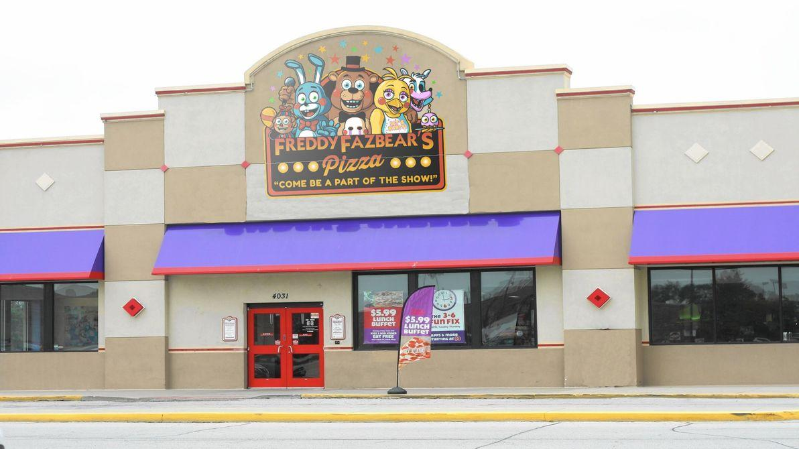
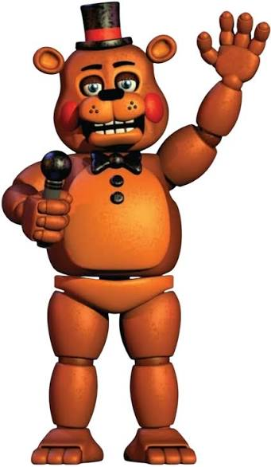
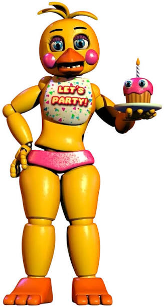
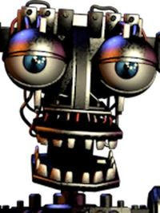
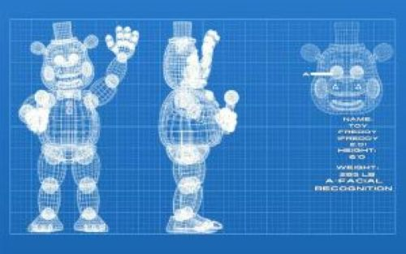
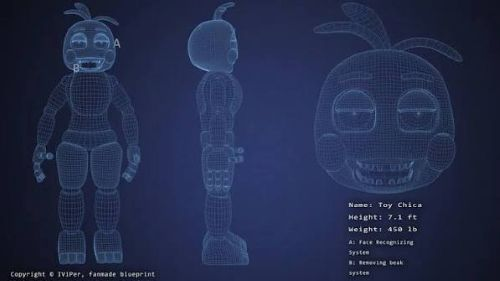

O período compreendido entre 1983 e 1994 representa simultaneamente o ápice do reconhecimento global da marca e o início de suas reestruturações operacionais mais severas. Após a descontinuação dos conceitos originais da Fredbear's Family Diner, a recém-consolidada Fazbear Entertainment Inc. iniciou uma expansão massiva através do estabelecimento da franquia Freddy Fazbear's Pizza. Esta era foi caracterizada pela substituição total dos trajes híbridos por animatrônicos de palco estáticos de segunda geração e, posteriormente, pela introdução temporária da linha tecnológica Toy com sistemas de varredura criminal. Este capítulo do memorial preserva os registros dessa transição mercadológica e os esforços da empresa para manter sua liderança no setor de entretenimento familiar.
VISÃO GERAL DA ÉPOCA

O CONCEITO NOVO: PELÚCIAS



1. TOY FREDDY
Designação Técnica: Unidade Avançada de Palco – Modelo T-01
Função Operacional: Vocalista Principal, Gestão de Aniversários e Interação de Salão
Descrição de Design e Estética
O modelo original do Fredbear foi projetado
Projetado para substituir o modelo clássico por uma estética mais amigável e moderna, o Toy Freddy foi construído com placas de plástico rígido termoformado em vez de pelúcia sintética, eliminando problemas anteriores de retenção de odores e umidade. Seu acabamento trazia um tom marrom-claro brilhante, bochechas rosadas com acabamento em verniz e uma cartola miniaturizada com faixa vermelha.
Equipado com o novo Módulo de Varredura Facial Biométrica, seus olhos possuíam sensores ópticos de alta resolução integrados diretamente ao banco de dados criminal local. Suas rotinas de palco incluíam movimentos mais fluidos de rotação de quadril e uma mandíbula superior articulada que não oferecia riscos de esmagamento mecânico durante fotos.
2. TOY BONNIE
Designação Técnica: Unidade Avançada de Palco – Modelo T-02
Função Operacional: Instrumentista de Cordas (Guitarra Elétrica)
Descrição de Design e Estética
Desenvolvido para atuar como o contraponto dinâmico no palco, o Spring Bonnie apresentava uma silhueta ligeiramente mais esguia e ágil que a do vocalista principal. Sua pelúcia, compartilhando o mesmo tom amarelo-ouro característico da primeira geração, contava com detalhes em relevo mais claro na região abdominal e na parte interna de suas longas orelhas articuladas. Diferente dos modelos posteriores de coelhos da marca, o Spring Bonnie original possuía olhos verdes estáticos de acrílico e um sorriso fixo e permanente, projetado para manter a atmosfera festiva mesmo quando o circuito estivesse desligado.
O Toy Bonnie apresentou a mudança estética mais radical da linha, adotando uma paleta de cores em azul-turquesa vibrante e detalhes brancos na região torácica. Suas bochechas vermelhas e cílios proeminentes foram desenhados para maximizar o apelo visual em ambientes com iluminação de neon.
Mecanicamente, o modelo contava com servomotores independentes em cada um dos dedos, permitindo uma simulação precisa de dedilhado em sua guitarra de fibra de vidro. Seus sensores ópticos possuíam uma funcionalidade de contração de íris mecânica, projetada para ajustar o foco da câmera em ambientes com fumaça cenográfica ou luzes piscantes de fliperama.
3. TOY CHICA
Designação Técnica: Unidade Avançada de Palco – Modelo T-03
Função Operacional: Entretenimento de Salão e Incentivo à Nutrição Infantil
Descrição de Design e Especificações
Construída com um design esguio e aerodinâmico em plástico amarelo-alta-visibilidade, a Toy Chica carregava uma versão atualizada do acessório Cupcake (Modelo C-02), equipado com olhos acrílicos independentes.
Uma característica notável de sua engenharia de palco era a capacidade de remover sua peça bucal (bico) e seus olhos ópticos padrão durante rotinas de manutenção interna ou apresentações especiais de teatro de sombras.
Nota do Arquivista: Registros de reclamações de pais sobre o visual "agressivo" do endosqueleto exposto do personagem quando operava sem o bico nos horários noturnos foram arquivados como reações subjetivas normais ao contraste de iluminação do restaurante.
DESENVOLVIMENTO TÉCNICO: ANIMAÇÃO DE PALCO E RECONHECIMENTO FACIAL
O avanço técnico desta era foi marcado pelo abandono completo dos mecanismos de travas de mola (springlocks) em favor da segurança absoluta. A engenharia da Fazbear Entertainment focou em duas frentes distintas de desenvolvimento:
-Geração Clássica (Endosqueleto V1): Modelos fixados ao palco através de ancoragem hidráulica pesada. Seus movimentos eram coordenados por computadores centrais que enviavam sinais elétricos para os servomotores internos, garantindo rotinas de dança e canto mais complexas.
-Geração Toy (Sistemas de Varredura Avançada): Introduzidos no final da década de 1980, estes modelos possuíam capacidade de locomoção livre durante o dia e eram equipados com módulos de reconhecimento facial interligados diretamente a um banco de dados de autoridades locais, projetados para detectar ameaças potenciais antes mesmo que entrassem no estabelecimento.
Nota do Arquivista: Os arquivos de programação dos modelos Toy indicam que a locomoção noturna dessas unidades era uma funcionalidade secundária necessária para evitar o travamento de seus servomotores por inatividade prolongada. Quaisquer alegações de que esses sistemas de segurança confundiam adultos com endosqueletos sem carcaça são consideradas falhas temporárias de calibração de software.
CONTROVÉRSIAS CORPORATIVAS E INCIDENTES REGISTRADOS
Fiel ao seu compromisso com a total transparência institucional, o Memorial dedica esta subseção à catalogação de relatórios regulatórios, investigações de auditoria e ocorrências de relações públicas que marcaram este período complexo da história da empresa.
-Investigações Sanitárias e Odoríferas: Registros do Departamento de Saúde Pública datados de meados dos anos 80 detalham reclamações isoladas de clientes a respeito de "odores persistentes" emanando das carcaças dos animatrônicos clássicos, bem como relatos visuais de "substâncias não identificadas" nas juntas dos olhos e bocas. A empresa prontamente higienizou as unidades e atribuiu o ocorrido ao acúmulo de umidade decorrente da condensação interna e da falta de ventilação nos palcos.
-Ocorrências de Segurança Local: O arquivo reúne recortes de jornais de época e relatórios policiais arquivados sobre o fechamento temporário de estabelecimentos devido a investigações locais envolvendo a segurança de clientes nas dependências do restaurante. A Fazbear Entertainment cooperou integralmente com todas as autoridades competentes na época. Embora os processos tenham sido encerrados sem condenações administrativas contra a corporação, a reestruturação da marca resultou na redução do orçamento operacional e na eventual descontinuação da linha de tecnologia avançada de varredura.
Nota do Arquivista: Lembramos aos visitantes que documentos oficiais protegidos por sigilo corporativo prolongado ou que contenham dados de inquéritos policiais arquivados exibem tarjas de censura jurídica irreversíveis. O Memorial não processará pedidos de abertura de arquivos que firam os acordos de confidencialidade firmados entre a Fazbear Entertainment Inc. e as companhias de seguros da época.
BLUEPRINTS:



MATERIAL PROMOCIONAL


DEPOIMENTO RECUPERADO: ARQUIVO #87-B (14 de Novembro de 1987)
"Eles me disseram que o reconhecimento facial dos novos modelos Toy era infalível. Mas ninguém me explicou por que eles me encaram daquele jeito.
Quando o Toy Freddy aparece no corredor, as luzes piscam e o monitor de segurança sofre um flicker violento. Não é um bug do sistema. Na terceira noite, vi o Toy Bonnie no escuro; suas íris mecânicas tinham encolhido para dois pontos brancos brilhantes.
E o pior é aquela coisa desfigurada na área infantil, a Chica. Ouvi o metal dela se arrastando pelo teto da ventilação, misturado com uma estática de rádio pesada. Se eu não tivesse colocado a máscara de proteção a tempo, aquele bico plástico teria..."
[FIM DA GRAVAÇÃO — SINAL CORROMPIDO]
Nota do Memorial: A Fazbear Entertainment esclarece que o funcionário sofria de privação de sono. Os movimentos noturnos eram apenas testes automáticos para evitar o travamento dos servomotores dos animatrônicos.